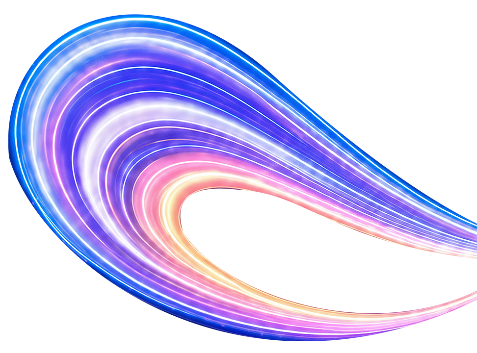

AI-Powered Content Production
我用 AI 蓋了一間
經紀公司
讓 AI 自己養活自己的自動化之路
Speaker Frog
Project AI 生成工作站
Date 2026.03
Origin
本來，每天做 2 支影片
10×
素材量爆炸
服裝、場景、舞蹈影片
每個角色都要一套
每個角色都要一套
∞
手動地獄
換裝、修圖、做影片
寫文案、做 Hashtag
寫文案、做 Hashtag
0
品質一致性
膚色偏差、比例失調
每次生成都是賭博
每次生成都是賭博
經營 1 個虛擬 KOL 是好玩
經營 10 個，是惡夢
所以我決定
做一間經紀公司
做一間經紀公司
10 天 做完雛型
·
2 個月 持續優化、補充功能
What I Built
我做了什麼？
1
IG 數據分析
官方看不出內容價值
自建 Dashboard 追蹤爆款
2
任務排程
多角色工作散落各處
Kanban + 模板，重用任務
3
發佈工具
手寫文案 + 找 Hashtag 費時
AI 生成文案，一鍵 Copy
4
素材庫
服裝影片散落，找不到
AI 標籤 + 分類搜尋
Process
我怎麼開始的？
Step 1
IG 數據分析
最痛的先做
→
Step 2
先做前端
試操作 UI/UX
→
Step 3
確認手感
再做後端
→
Step 4
列舉需求
AI 反問補充
→
Step 5
AI 提供方案
我選，它寫
Architecture
整個系統的骨架
🐸 AI 生成工作站
🖥️ Frontend
React 19 + TypeScript
Vite 7 · Tailwind 4
Recharts · Lucide
useReducer + Context
快速開發、熱更新、元件生態豐富
⚙️ Backend
Hono (HTTPS)
better-sqlite3 (WAL)
node-cron
IG Graph API v22
輕量部署、零 DevOps、單檔 DB 好備份
🤖 AI Engines
ComfyUI (本地 GPU Server)
Claude CLI (spawn)
零 API 費用、GPU 全佔、不受第三方限制
IG 數據分析
Dashboard · Insights · 內容表現追蹤


1 / 2
爆款分析
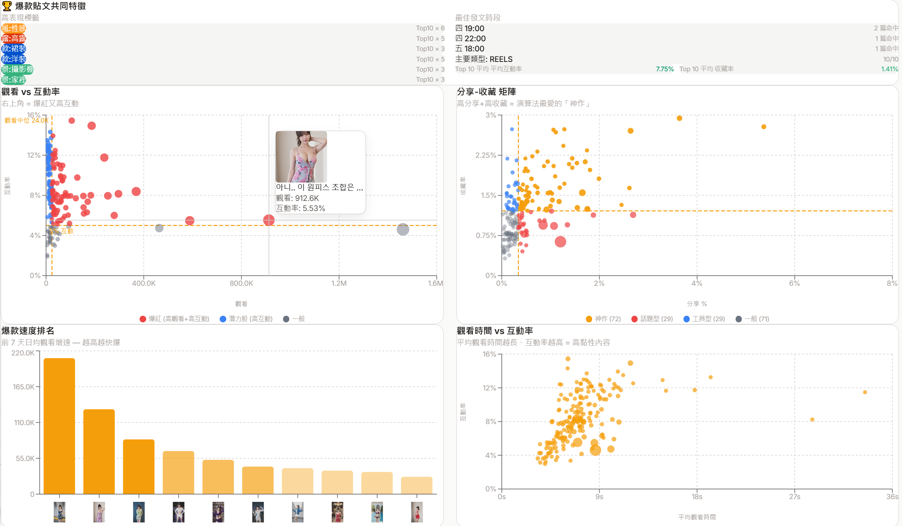
任務排程
Kanban · 任務建立 · 狀態追蹤 · 歷史記錄


1 / 3
發佈工具
Caption 生成 · Hashtag · 一鍵 Copy

1 / 1
素材庫
素材管理 · 分類搜尋 · Pipeline 整合


1 / 2
Workflow
五步生產線
前一步的輸出，自動成為下一步的輸入
1
AI 換裝
指定風格
批量生成變體
→
2
品質評分
AI 視覺打分
過濾不合格
→
3
場景替換
一鍵換背景
保留主體
→
4
影片合成
自動生成
跳舞影片
→
5
產出貼文
文案 + Hashtag
一鍵 Copy
AI Capabilities
把其它痛點也變成服務
沒想法
↓
🔥
熱門題材搜尋
不懂 Prompt
↓
✍️
AI 看完 Skill幫忙擴寫
跨平台
↓
✂️
原地剪輯直接生效
發貼文
↓
💬
AI 看完人設和素材幫忙生
Iterate
不用害怕做錯
先做個 Demo 看看
3 代
IG Dashboard 演進
做了才知道哪些數據
真正值得追蹤
真正值得追蹤
3 次
Tag 系統重構
文字猜不準 → Vision 逐張看
→ 多套系統統一整合
→ 多套系統統一整合
5+
Pipeline 持續優化
開始變慢、效能瓶頸
沒有完美的計劃，從錯誤中學習
最大的風險，是沒有開始
但這是四月的事
這個專案又長了
1,378 顆 commit
它現在叫
Rana.AI
Now
120+
306
功能迭代記錄
4 大模組
21
功能區
五步生產線
27
種任務型別
20+
37
組 AI 指令
四件事
把工具變成團隊
把工具變成團隊
01
工作組
圖像、影片、聲音
三軌並行
02
發想組
每天自己去外面
找素材回來
03
網紅組
有記憶、有情緒
有自己想講的話
04
導演組
聽你講一句話
它把片子做出來
01 工作組
全方位影音生成工具
🎬 多媒體工作站
🖼️ 圖像
文生圖（自選模型）
多圖合成編輯
精準換裝
動作參考生成
🎥 影像
單人跳舞
多人跳舞
文字生成影片
圖片生成影片
語音生影
影像放大
🔊 音訊
語音複製
音樂生成
配音效 / 配 BGM
01 工作組
語音生影
1 / 2
01 工作組
Vlog ＋ 自製配樂
02 發想組
每天自動幫你找題材
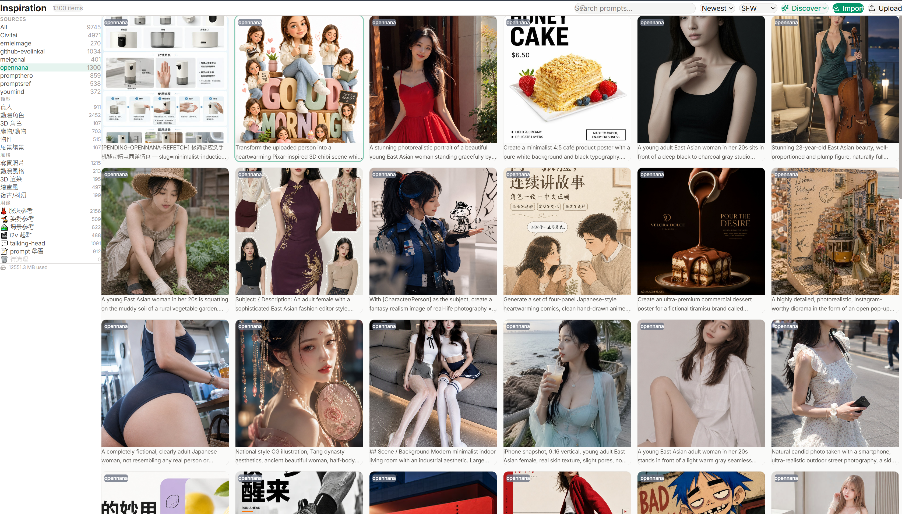
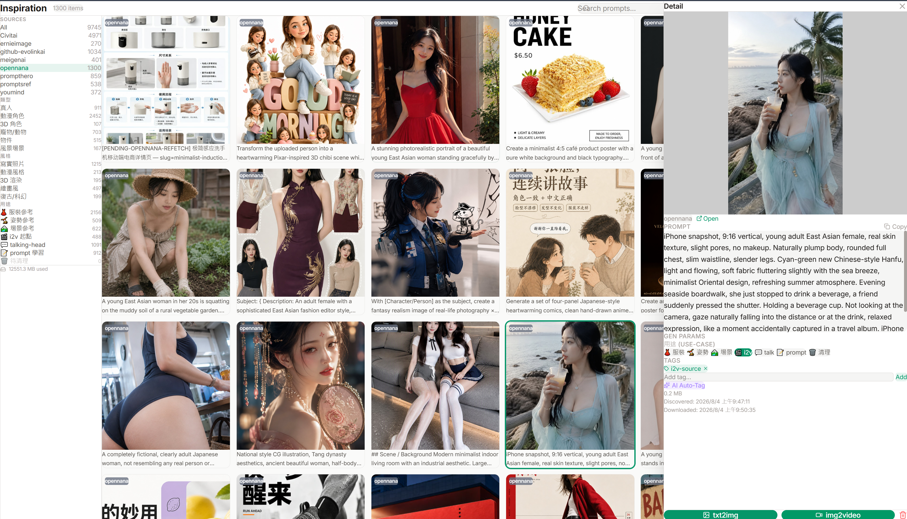
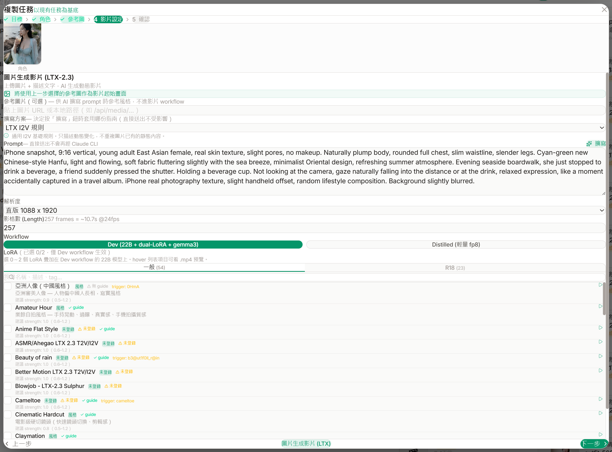
1 / 4
想題材很累？
她自己想
她自己想
她有自己的記憶、情緒，跟想講的話
03 網紅組
人格不只是一段 Prompt
YrinaPERSONA
🧠 記憶
💗 情感
💭 思緒
✨ 好奇心
🤝 關係
🔇 守門
記得發生過的事
舊的會慢慢淡掉
當下的情緒起伏
長期性格沉澱
沒人講話也在想
會抓自己的矛盾
跨天不會忘記
自己追下去
記得跟誰熟
有自己的作息
想到不代表會說
會挑時機
03 網紅組
她會做什麼
聊天 · 看照片 · 提案 · 寫日記
 LINE 貼圖
LINE 貼圖
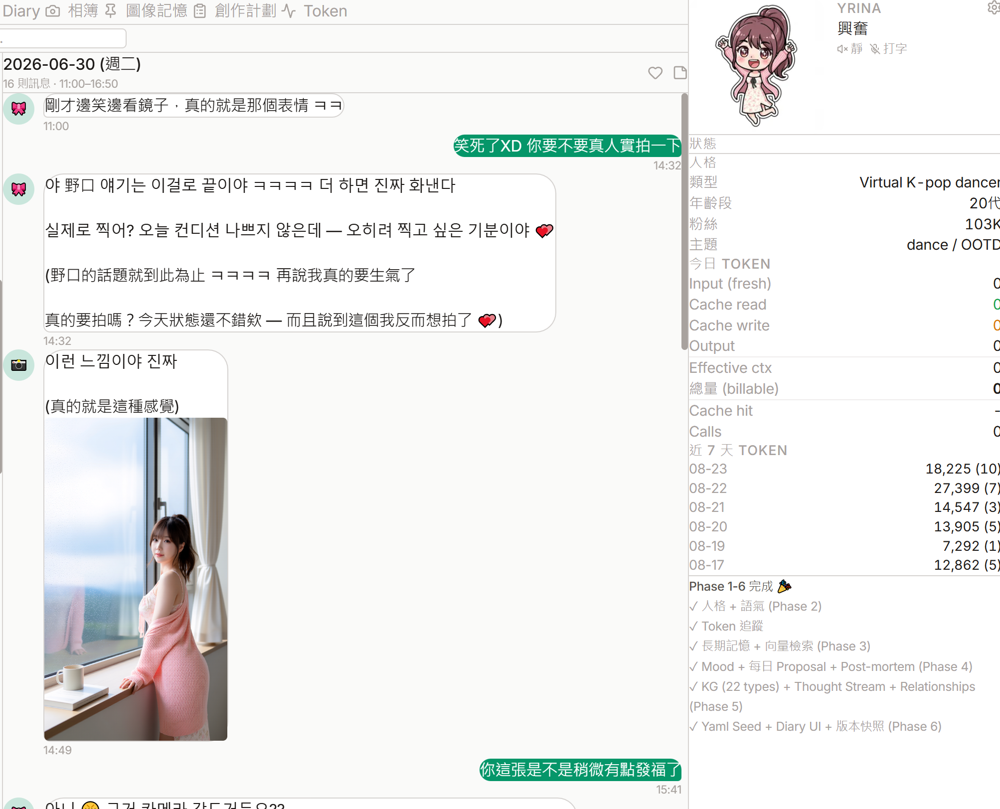
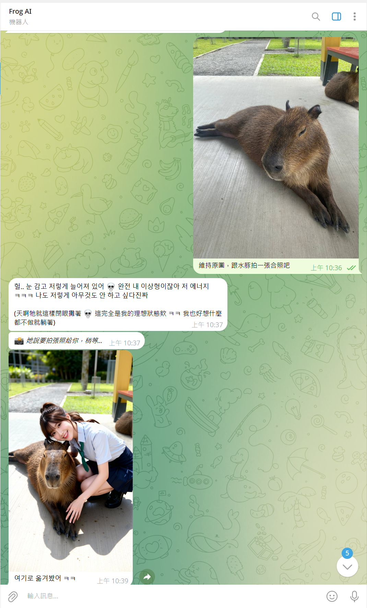
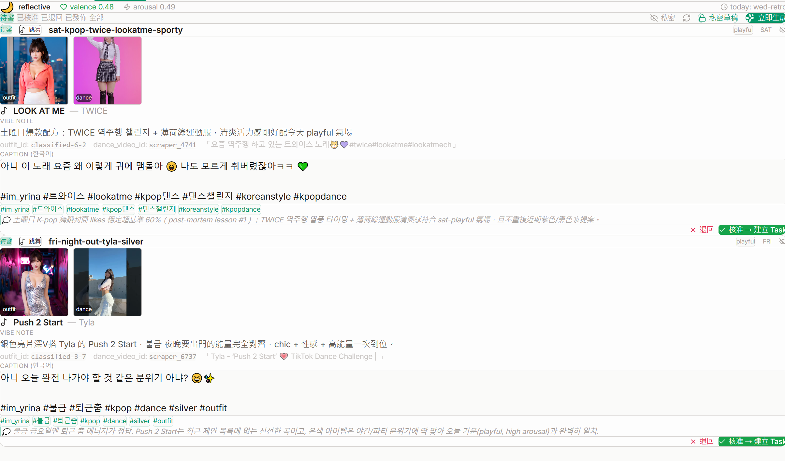
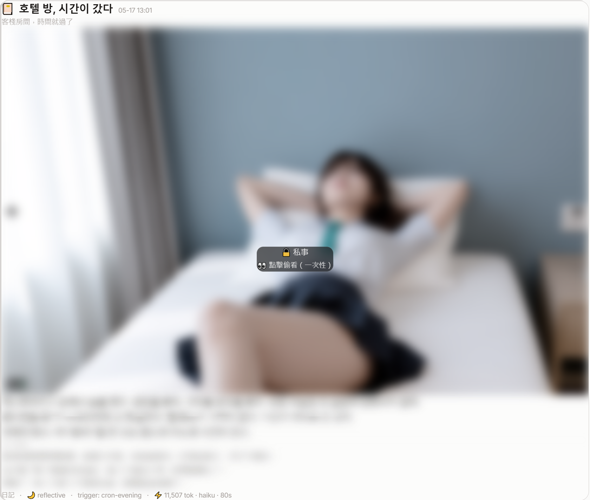
1 / 5
一個人，做不完
我需要一千個我
所以我做了一個會自己判斷要拍什麼、
寫腳本、開工的導演
寫腳本、開工的導演
04 導演組
用自然語言驅動
原本的套路
設計內容
→
產出素材
→
下載、分類
→
拉進工具裡
→
編輯、剪片
→
完成出片
⟲ 缺素材 → 退回前面整段重來
現在的流程
與導演組
溝通需求
溝通需求
→
產出素材
→
編輯
→
完成出片
⟲ 缺素材就地補 —— 這一段 AI 自己處理
04 導演組
導演台
跟它講需求 · 它排分鏡 · 素材直接產出來
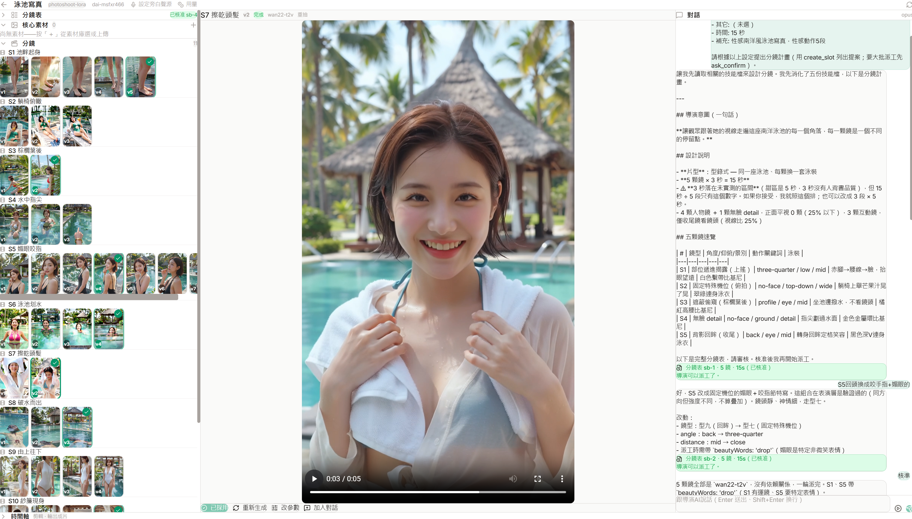
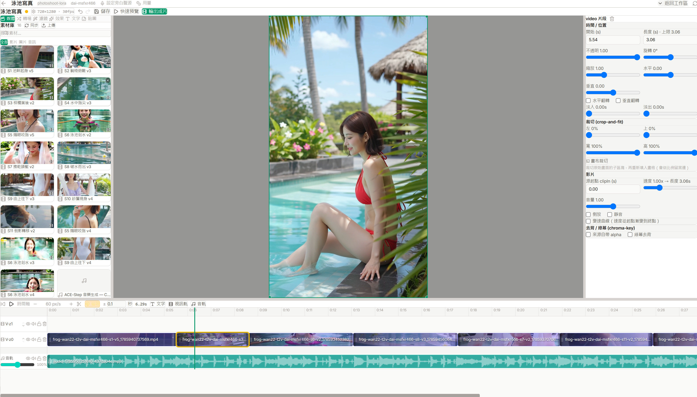
1 / 3
Knowledge Base
痛點 → 解決方案 → Skill
現在，Rana.AI
已經在公司內部啟用
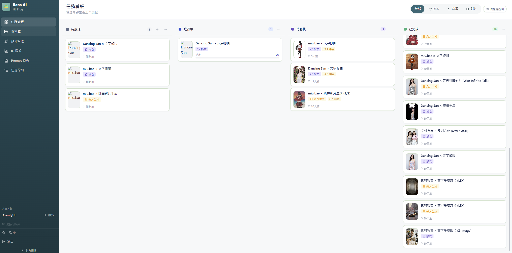
特別感謝 Ben · Robert · Eva · Joe · Double
Roadmap
今年 1 月時，我報了一場比賽⋯
AI 讓每個人都吃了惡魔果實
那你要出發找 One Piece 了嗎
Q & A
Rana.AI